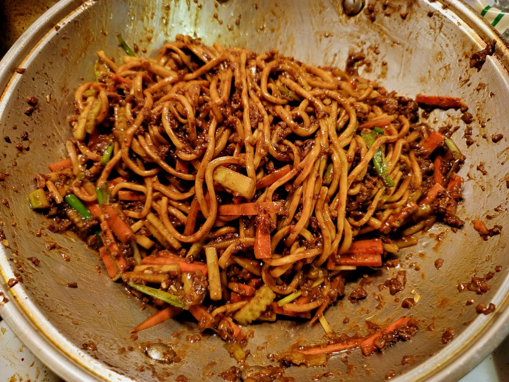

Zha Jiang Mian (Beijing Fried Sauce Noodles)

Ingredients:
Marinade:
- 1/2 lb Ground pork
- 1/4 tsp Salt
- 1 tsp Cornstarch
- 1/2 tsp Canola oil
- 1/8 tsp White pepper
Zha Jiang Mian:
- 1 tbsp Canola oil
- Optional: 1 oz Pork fat, minced
- 1 inch Ginger, minced
- 1 inch Garlic, minced
- 6 Shiitake mushrooms, minced
- 2 tbsp Sweet bean sauce
- 3 tbsp Ground bean sauce
- 1 tbsp Dark soy sauce
- 1 cup Water
- 1 lb Fresh wheat noodles or 1/2 lb Dried wheat noodles, prepared
- 1 cup Carrot, julienned, about 1 large Carrot
- 1 cup Cucumber, julienned, about 1 large Cucumber
- 1/2 cup Scallions, julienned
Instructions:
- Combine the marinade ingredients and massage completely into the pork. Let marinate at least 15 minutes or overnight.
- Heat the canola oil in a wok over medium heat. Add in the pork fat if using and let the fat render, about 1 minute. Add the marinated pork and stir-fry until fully cooked and browned, about 1 minute. Then add in the ginger, garlic, and mushrooms and stir-fry for another 2-3 minutes.
- Add in the sweet bean sauce, ground bean sauce, dark soy sauce, and water and stir until mixed completely. Lower the heat to low and cover. Let cook for 15-20 minutes, stirring occasionally.
- Add in the noodles and toss until the sauce is clinging to the noodles. Then add in the carrots, cucumber and scallions and toss until mixed. Serve immediately.